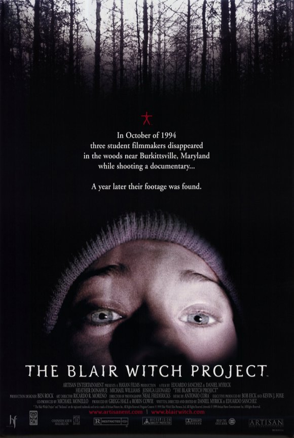
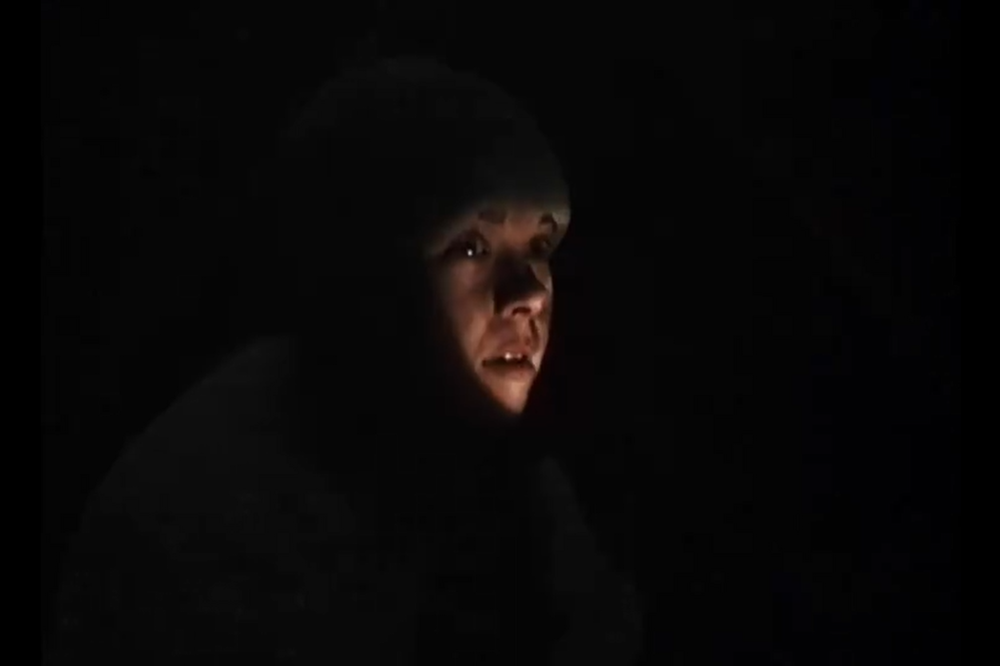
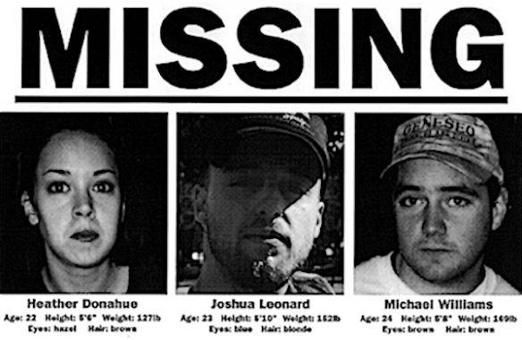

<!DOCTYPE html>
<html>
    <head>
        <meta charset="utf-8" />
        <title>Intro</title>
        <link rel="stylesheet" href="style.css">
    </head>
    <body>
        <div class="js-container"></div>    
        <script src="https://unpkg.com/supersimpledev/react.js"></script>
        <script src="https://unpkg.com/supersimpledev/react-dom.js"></script>
        <script src="common.jsx" type="text/babel"></script>
        <script src="https://unpkg.com/supersimpledev/babel.js"></script>
        <script type="text/babel">
            const title = createHeader("intro", "index")
            
            const poster = (
                <div class="message-image-content"> 
                    
                    <p><em>The Blair Witch 1999</em></p>
                </div>
            )

            const screenshot = (
                <div class="message-image-content"> 
                    
                    <p><em>Heather listens for Josh's wails.</em></p>
                </div>
            )
  
            const missing = (
                <div class="message-image-content"> 
                    
                    <p><em>The promotional missing poster that many believed was real</em></p>
                </div>
            )

            const app = (
                <>
                    {title}
                    <div class="message-board">
                        <div class="message-row">
                            <div>
                                <p class="message-box">
                                    The 1999 cult-classic The Blair Witch Project grossed over $250 million over a budget of less than $60,000, demonstrating the accessibility of film technology, the power of guerilla marketing, and the rapidly changing industry landscape. It became a catalyst for low-budget, experimental horror filmmaking that rejected traditional notions of starpower and expensive production technologies. Instead, The Blair Witch Project weaponized its meagre budget by using handheld cameras, improvised performances, and an authentic found-footage aesthetic that blurred the line between fiction and reality.
                                    <br /><br />
                                    Turner describes the film as a “glowing example” of what could be achieved through “cheap emerging technology” and a “‘less is more’ approach” (7-14). Rather than allowing its limited resources to restrict the film, these conditions became central to how its horror was produced and experienced. The relationship between technological limitation and horror is particularly evident in the film’s visual style. Rather than revealing its supernatural threat through elaborate effects, The Blair Witch Project constructs fear through unstable camerawork, restricted visibility and allusions to the horrors outside the frame. Turner argues that the film relies on “the power of suggestion and the fear of what is unseen” (33-52), shifting the production of horror from what the audience can see towards what they are forced to imagine. The film’s apparent amateurism therefore becomes more than an aesthetic choice: it encourages audiences to question the authenticity of what they are watching and actively participate in constructing the threat. 
                                </p>
                                {screenshot}
                            </div>
                            {poster}
                        </div>
                        <p class="message-box-floating">
                            This uncertainty was extended beyond the film through its promotional campaign. The official website (Artisan Pictures), missing-person materials, fictional documentation, trailers and surrounding paratexts encouraged audiences to encounter The Blair Witch Project as something potentially real before they even entered the cinema.  Telotte argues that the film’s website could “frame the film narrative within a context designed to condition our viewing” (32), demonstrating how promotion became part of the film’s meaning rather than simply advertising it. The film’s reception was consequently shaped not only by what appeared on screen, but by the wider industrial and technological environment through which audiences encountered it.
                        </p>
                        <div class="message-row">
                            {missing}
                            <p class="message-box">
                                The relationship between technology, production, and promotion is therefore central to understanding The Blair Witch Project’s lasting significance. Its low-cost filmmaking methods demonstrated that horror could create spectacle through suggestion, uncertainty and audience participation rather than relying primarily on celebrity or expensive visual effects. Its promotional strategies extended this experience beyond the screen, while its found-footage aesthetic provided a model that could be adapted by later low-budget horror filmmakers. Moreover, The Blair Witch Project continued the discussion around film censorship, as it earnt an “R” rating by the MPAA despite the antagonist remaining off-screen for the film’s entirety. Examining these industrial and technological contexts alongside censorship, promotion and the film’s influence on contemporary horror reveals how The Blair Witch Project helped reshape what audiences could expect from low-budget horror, and how meaning could be produced through the interaction of film, technology and audience. 
                            </p>
                        </div>
                    </div>
                </>
            )

            const container = document.querySelector('.js-container')
            const root = ReactDOM.createRoot(container)
            root.render(app)
        </script>
    </body>
</html>